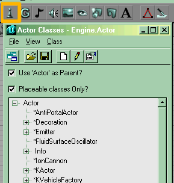

Actor Overview

Actor Classes Browser |
The Actor Classes Browser
The Actor Classes Browser shows a hierarchy of all currently loaded actor classes. To bring up the Actor Classes Browser:
- click the button labled "browsers #1" on the toolbar
- or do UnrealEd Main Menu → View → Actor Class Browser.
![[interface.toolbar]](images/interface-toolbar.png) UnrealEd Toolbar |
How To Insert Actors
The first step is to select an item in the Actor Classes Browser. Then in one of the UnrealEd Viewports, do:
- Viewport Context Menu → Add <selected actor> here
In a 3D viewport the actor will appear near the surface that was right-clicked. In a 2D view, UnrealEd will take the third coordinate to be 0 and may refuse to place the actor in solid space. More: Add An Actor.
![[interface-Ed3-actorproperties]](images/interface-ed3-actorpropertie.png) Actor Properties Window |
How To Edit Actor PropertiesThe Actor Properties Window holds all the settings for an actor. It always updates itself to display information for the currently selected actor or actors. To open it do one of:
Within this window you can edit the properties for the currently selected Actor. Note that this window isn't a dialog box, there's no "OK" button: changes to properties affect the actor immediately. More: Set The Following Properties. How To Delete ActorsClick the Actor in one of the editor windows that you want to delete. Then press the Delete key on the keyboard, or do Actor Context Menu → Delete. |
Other Actor Techniques
- Duplicate Actor
- Do Actor Context Menu → Duplicate to create an exact copy of the actor near to the original.
In UE2 it seems that Actor names are swapped after duplication. New actor gets old actor name and old actor gets a new name. - Make Current
- Do Actor Context Menu → Make Current to make that actor's class the new selected class in the Classes Browser.
- Copy/Paste
- If you select an Actor and press CTRL+C, a copy will be placed on the clipboard. This can be pasted into the same map or another, but note that UnrealEd often takes a long time to process a paste command. It can also be pasted into a text editor, where only the properties that have changed from defaults for that actor will be shown. This is very useful for understanding how other mappers have achieved an effect. This copy can be pasted in maps, but this feature can cause errors in your map and is not recommended. – not had any problems with this myself. —Tarquin
- Import/Export Actors
- see Data Import And Export
- Snap to grid
- Make any actor snap to the grid by setting its Advanced → bEdShouldSnap property to True
- Superimposed actors
- if two actors need to be in the exact same location, set Display → Drawscale of first one you placed there to something larger than default. You'll get a big icon with the smaller, newer actor on top, and can thus select either easily.
Actor Properties
The huge list of properties each actor has may seem daunting at first. The large majority of them are common to all actor classes. They fall under the following property groups:
- Advanced
- Contains deep technical mojo. Some of these are handy for mappers, eg bEdShouldSnap makes the actor snap to the grid. See Actor/Advanced.
- Collision
- Determines the size and behaviour of the Collision Cylinder – for something like a Trigger, this sets the "listening" area. See Actor/Collision.
- Display
- Things relating to the actor's display. Skin textures and sizes of models, for example. See Actor/Display.
- Events
- Holds just two properties, which determine how what actors trigger and what they are triggered by. See Event for an overview, and Actor/Events for technicals.
- Filter
- Determines under what cicumstances the actor should appear (eg single player, net game, etc ). See Actor/Filter?.
- Lighting, LightColor
- These two groups set the light-emitting properties of the actor. This includes light colour, brightness, effects and fog. See Actor/Lighting.
- Movement
- Holds things like rotation, but also an actor's location. See Actor/Movement.
- Networking
- See Actor/Networking?.
- Object
- The actor's name and class, which aren't editable, and its InitialState property.
- Sound
- Sets properties for the actor's ambient sound. See Actor/Sound.
Related Topics
- Reference for the UnrealEd Interface
- Toolbar reference
- Actor Properties Window
- Category Tutorial